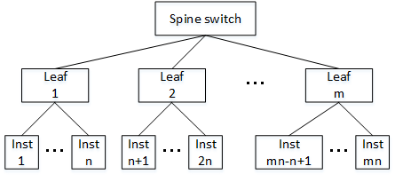

クラスタ・ネットワーク は、業界標準のRoCEv2を採用する高帯域・低遅延のRDMA対応インターコネクトネットワークサービスで、そのトポロジーがFat treeのため同一リーフスイッチに接続するノード間とスパインスイッチを介して異なるリーフスイッチに接続するノード間で、ノード間通信のレイテンシが大きく異なります。このため、この特性を意識して適切な計算/GPUノードにジョブを配置することで、レイテンシに影響を受け易いワークロードの性能や高並列実行時のスケーラビリティを改善できる場合があります。
本パフォーマンス関連Tipsは、この クラスタ・ネットワーク のレイテンシ特性を生かしてマルチノードジョブをクラスタ内に配置することで、ノード間通信性能を最適化する方法を解説します。
0. 概要
クラスタ・ネットワーク は、そのトポロジーにノンブロッキング構成のFat treeを採用し、複数のノードに跨るHPC/機械学習ワークロードを実行するHPC/GPUクラスタのノード間接続に最適なサービスです。
この クラスタ・ネットワーク は、下図のような2階層スパイン・リーフトポロジーを有し、デプロイ時点のデータセンターリソース状況に応じて何れかのリーフスイッチ配下にインスタンスを接続します。

このためノード間通信性能は、通信する2ノードがどのリーフスイッチ配下に接続されているかにより、特にレイテンシが大きく異なります。
最もレイテンシ性能が良いノードの組合せは、同一リーフスイッチ配下に接続するノード同士で、異なるリーフスイッチ配下に接続するノード同士は、その間のホップ数増加により同一リーフスイッチ配下のノード間と比較してレイテンシが増大します。
このリーフスイッチは、ラック内に設置されているいわゆるTOR（Top of Rack）スイッチで、 インスタンス・メタデータ に格納されているラック識別IDを調べることで、デプロイしたインスタンスが クラスタ・ネットワーク のどのリーフスイッチに接続しているかを知ることが出来ます。
例えば、4ノードのインスタンスを クラスタ・ネットワーク と共にデプロイした際、以下のように2インスタンス毎に2ラックに配置されたとすると、
| ラック （リーフスイッチ） |
インスタンス |
|---|---|
| rack_1 | inst_1 |
| inst_2 | |
| rack_2 | inst_3 |
| inst_4 |
最もレイテンシー性能が良いノードの組み合わせは inst_1 <—> inst_2 と inst_3 <—> inst_4 で、その他の組み合わせはこれよりレイテンシが大きくなります。
クラスタ・ネットワーク は、この点を考慮してデプロイ時に極力同一リーフスイッチ配下のインスタンスを選択するアルゴリズムが組み込まれていますが、同一ラックに収容できるインスタンス数の上限や他のユーザの利用状況で異なるリーフスイッチに跨ってインスタンスを配置することがあり、この観点で クラスタ・ネットワーク 内のインスタンス接続位置を意識することは意味を持ちます。
このようして取得した クラスタ・ネットワーク のトポロジー情報は、ジョブスケジューラ Slurm の持つ Topology-aware resource allocation に活用することが出来ます。
本テクニカルTipsは、HPCワークロード向けベアメタルシェイプ BM.Optimized3.36 と Oracle Linux 8ベースの HPCクラスタネットワーキングイメージ を クラスタ・ネットワーク と共にデプロイするHPCクラスタを想定し、ノード間通信性能に最適なノード配置を自動的に行う Slurm クラスタの構築を、以下のステップに従い解説します。
- クラスタ・ネットワーク トポロジー特定
- Topology-aware resource allocation セットアップ
- Topology-aware resource allocation 稼働確認
1. クラスタ・ネットワークトポロジー特定
本章は、 クラスタ・ネットワーク と共にデプロイした BM.Optimized3.36 が配置されているラックIDを インスタンス・メタデータ から入手し、 クラスタ・ネットワーク 内のどのリーフスイッチに接続されているかを特定します。
以下コマンドを全ての計算ノードのopcユーザで実行し、それぞれを収容するラックIDを収集します。
$ sudo curl -sH "Authorization: Bearer Oracle" -L http://169.254.169.254/opc/v2/host 2> /dev/null | jq .rackId
"3eec77ea664b0599b20732536409a9f3893eef6a78e5da3539dd4bfb7918f88e"
$
この結果から、下表のネットワークトポロジーを得ます。
| ラックID | リーフスイッチ | インスタンス |
|---|---|---|
| 3eec….f88e | ls0 | inst-0shbg-x9 |
| inst-91oup-x9 | ||
| 820b….ea28 | ls1 | inst-el428-x9 |
| inst-nzy6b-x9 |
2. Topology-aware resource allocationセットアップ
本章は、先に取得した クラスタ・ネットワーク のトポロジー情報を元に、 Slurm の Topology-aware resource allocation をセットアップします。
取得したトポロジー情報から、 Topology-aware resource allocation の設定ファイル topology.conf を以下のように作成し、これを slurm.conf と同じディレクトリに配置します。
SwitchName=ls0 Nodes=inst-0shbg-x9,inst-91oup-x9
SwitchName=ls1 Nodes=inst-el428-x9,inst-nzy6b-x9
SwitchName=ss0 Switches=ls[0-1]
この設定ファイルは、自身の環境に合わせて以下の方針で修正します。
- 最後のスパインスイッチ定義行の [] 内を実際のリーフスイッチ数に修正
- それ以外のリーフスイッチ定義行を実際のリーフスイッチ数分作成
- リーフスイッチ定義行の Nodes= に実際のインスタンスの名前解決可能なホスト名を記載
次に、 slurm.conf に以下の記述を追加します。
$ grep TopologyPlugin slurm.conf
TopologyPlugin=topology/tree
$
次に、以下コマンドをslurmctldが動作するノードの Slurm 管理者権限を有するユーザで実行します。
$ scontrol reconfigure
この設定が正しく行われると、sbatch・srun・sallocコマンドで以下のオプションが使用可能になります。
- -switches=max_leaf[@max_wait]
このオプションは、ジョブに割当てるノード群の接続に使用するリーフスイッチ最大数を max_leaf に指定します。
クラスタ・ネットワーク は、2階層のスパイン・リーフトポロジーのため、この値を1に指定すると割当てるノード群を同一リーフスイッチ接続のものに限定することになります。
また指定が任意な max_wait は、 max_leaf に指定したリソース条件が満たされない場合の最大待ち時間（分）を指定します。
この機能により、指定したリーフスイッチ数以下のノード割り当てに長時間を要する場合、指定した時間後にこれをあきらめてジョブの実行開始を優先することが可能です。
分以外の時間指定方法は、 man sbatch 等を参照ください。
3. Topology-aware resource allocation稼働確認
3-0. 概要
本章は、先に設定した Topology-aware resource allocation が想定通りに動作するかを確認するとともに、 クラスタネットワーキングイメージ に含まれるOpenMPIと Intel MPI Benchmark を使用したノード間通信のレイテンシ計測を実施します。
Topology-aware resource allocation の動作確認は、以下3タイプのテストケースを使用して行います。
-
ジョブが流れていない状態で、 - -switches=1@1 オプションを指定した2ノードジョブを投入し、即座にジョブが実行を開始し、レイテンシが同一リーフスイッチ接続ノード間相当であることを確認する。
-
同一リーフスイッチに接続される空きノードが最大1ノードの状態で、 - -switches=1@1 オプションを指定した2ノードジョブを投入し、1分の待ち時間の後ジョブが実行を開始し、レイテンシがスパインスイッチ跨ぎ接続ノード間相当であることを確認する。
-
同一リーフスイッチに接続される空きノードが最大1ノードの状態で、 - -switches=1@3 オプションを指定した2ノードジョブを投入し、3分未満で他の実行中ジョブが終了して同一リーフスイッチに接続される空きノードが2ノード以上に増えた時点でジョブが実行を開始し、レイテンシが同一リーフスイッチ接続ノード間相当であることを確認する。
以降では、各テストケースの実行方法を 1. クラスタ・ネットワークトポロジー特定 で示した4ノードクラスタ環境を例に解説します。
3-1. テストケース1
以下のジョブスクリプトを用意します。
[no_block.sh]
#!/bin/bash
#SBATCH -n 2
#SBATCH -N 2
#SBATCH --switches=1@1
#SBATCH -o no_block.out
echo "Dispatched hosts are $SLURM_JOB_NODELIST"
echo
source /usr/mpi/gcc/openmpi-4.1.2a1/bin/mpivars.sh
export UCX_NET_DEVICES=mlx5_2:1
mpirun /usr/mpi/gcc/openmpi-4.1.2a1/tests/imb/IMB-MPI1 -msglog 0:1 PingPong | grep -A1 repetitions
ジョブが流れていない状態で以下コマンドを実行し、即座にジョブが実行を開始し、レイテンシが同一リーフスイッチ接続ノード間相当の1.6us程度であることを確認します。
$ sbatch no_block.sh
Submitted batch job 172
$ cat no_block.out
Dispatched hosts are inst-el428-x9,inst-nzy6b-x9
#bytes #repetitions t[usec] Mbytes/sec
0 1000 1.66 0.00
$
3-2. テストケース2
以下2種類のジョブスクリプトを用意します。
なお、block_sub.shの -n ・ -N ・ –nodelist オプションは、同一リーフスイッチに接続する空きノードが最大1で総空きノード数が2以上となるよう、自身の環境に合わせて変更します。
[block_main_1min.sh]
#!/bin/bash
#SBATCH -n 2
#SBATCH -N 2
#SBATCH --switches=1@1
#SBATCH -o block_1min.out
echo "Dispatched hosts are $SLURM_JOB_NODELIST"
echo
source /usr/mpi/gcc/openmpi-4.1.2a1/bin/mpivars.sh
export UCX_NET_DEVICES=mlx5_2:1
mpirun /usr/mpi/gcc/openmpi-4.1.2a1/tests/imb/IMB-MPI1 -msglog 0:1 PingPong | grep -A1 repetitions
[block_sub.sh]
#!/bin/bash
#SBATCH -n 2
#SBATCH -N 2
#SBATCH --nodelist=inst-el428-x9,inst-0shbg-x9
echo "Dispatched hosts are $SLURM_JOB_NODELIST"
echo
sleep 120
ジョブが流れていない状態で以下コマンドを実行し、1分の待ち時間の後block_main_1min.sh側のジョブが実行を開始し、レイテンシがスパインスイッチ跨ぎ接続ノード間相当の3.0us程度であることを確認します。
$ sbatch block_sub.sh; sleep 3; sbatch block_main_1min.sh
Submitted batch job 173
Submitted batch job 174
$ squeue
JOBID PARTITION NAME USER ST TIME NODES NODELIST(REASON)
174 sltest block_ma miyat PD 0:00 2 (Resources)
173 sltest block_su miyat R 1:39 2 inst-0shbg-x9,inst-el428-x9
$ squeue
JOBID PARTITION NAME USER ST TIME NODES NODELIST(REASON)
173 sltest block_su miyat R 1:40 2 inst-0shbg-x9,inst-el428-x9
$ cat block_1min.out
Dispatched hosts are inst-91oup-x9,inst-nzy6b-x9
#bytes #repetitions t[usec] Mbytes/sec
0 1000 3.03 0.00
$
3-2. テストケース3
以下2種類のジョブスクリプトを用意します。
なお、block_sub.shの -n ・ -N ・ –nodelist オプションは、同一リーフスイッチに接続する空きノードが最大1で総空きノード数が2以上となるよう、自身の環境に合わせて変更します。
[block_main_3min.sh]
#!/bin/bash
#SBATCH -n 2
#SBATCH -N 2
#SBATCH --switches=1@3
#SBATCH -o block_3min.out
echo "Dispatched hosts are $SLURM_JOB_NODELIST"
echo
source /usr/mpi/gcc/openmpi-4.1.2a1/bin/mpivars.sh
export UCX_NET_DEVICES=mlx5_2:1
mpirun /usr/mpi/gcc/openmpi-4.1.2a1/tests/imb/IMB-MPI1 -msglog 0:1 PingPong | grep -A1 repetitions
[block_sub.sh]
#!/bin/bash
#SBATCH -n 2
#SBATCH -N 2
#SBATCH --nodelist=inst-el428-x9,inst-0shbg-x9
echo "Dispatched hosts are $SLURM_JOB_NODELIST"
echo
sleep 120
ジョブが流れていない状態で以下コマンドを実行し、2分の待ち時間の後block_main_3min.sh側のジョブが実行を開始し、レイテンシが同一リーフスイッチ接続相当の1.6us程度であることを確認します。
$ sbatch block_sub.sh; sleep 3; sbatch block_main_3min.sh
Submitted batch job 178
Submitted batch job 179
$ squeue
JOBID PARTITION NAME USER ST TIME NODES NODELIST(REASON)
179 sltest block_ma miyat PD 0:00 2 (Resources)
178 sltest block_su miyat R 0:06 2 inst-0shbg-x9,inst-el428-x9
$ squeue
JOBID PARTITION NAME USER ST TIME NODES NODELIST(REASON)
$ cat block_3min.out
Dispatched hosts are inst-el428-x9,inst-nzy6b-x9
#bytes #repetitions t[usec] Mbytes/sec
0 1000 1.65 0.00
$